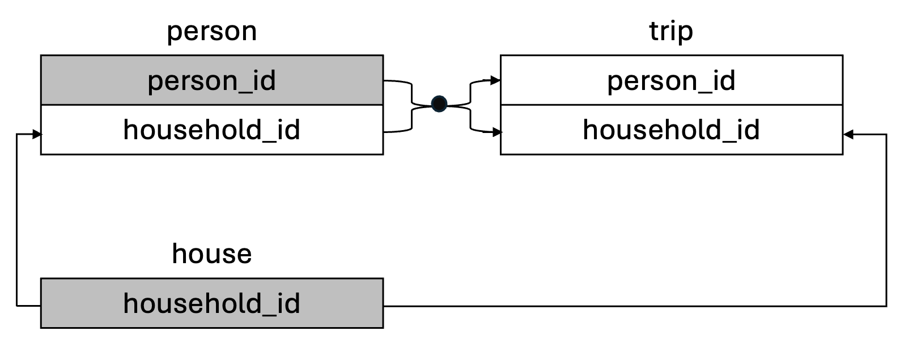
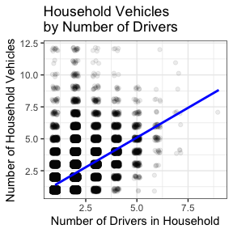

This data package contains four subsets tripaccess, person, house, and trip, constructed from the National Household Travel Survey (NHTS) 2017 person, house, and trip files. It includes personal trips, mobility, demographic, and household information. It is suitable for data visualization, data wrangling, joining datasets, exploratory data analysis (EDA), group comparisons, simple linear regression, categorical data analysis, and data ethics discussion in data science and statistics classes.
Disability Inclusion Orientation
One goal of this data package is to increase awareness of disability inclusion by examining factors or characteristics that are associated with different travel behaviors of people who have a travel disability. The tripaccess and person datasets include a variable travel_disability, indicating whether respondents have a medical condition “that makes it difficult to travel outside of home”. These two datasets also include travel accommodations information, e.g., walker, cane.
Note that the NHTS 2017 has imbalanced classes of people who have a travel disability and people who do not have a travel disability. So this data package can be used for data ethics discussion, e.g., ethical concerns of underrepresentation of marginalized groups in your data.
The transport system is a pillar for ensuring social equity (Pagliara & Di Ciommo, 2020). People often need to travel to work, study, connect with other people, shop groceries, attend medical appointments, and participate in fun events. There have been uneven distributions of travel resources in the current built environment for disabled people, which causes barriers to access for them (Levine & Karner, 2023). This data package can be used to study economic and social participation from a critical disability lens and provide policy implications for building a more equitable and inclusive transport system.
Installation
Install tripaccess from CRAN:
install.packages("tripaccess")Install the development version of tripaccess from GitHub:
# If you haven't installed the pak package yet, do so:
# install.packages("pak")
pak::pak("scao53/tripaccess")
# Load package
library(tripaccess)Datasets Included
-
tripaccess: tripaccess, constructed from the NHTS 2017 person and trip files, includes disability and other demographic as well as mobility and trip categorical and numeric variables. It has 86,521 rows (each row is a person, filtered to age 18-61) and 40 columns. It can be used for advanced exercises, e.g., data visualization, single table data wrangling, EDA, group comparisons, and categorical data analysis. -
person: person, constructed from the NHTS 2017 person file, includes disability, mobility, and other demographic categorical and numeric variables. It has 99,564 rows (each row is a person, filtered to age 18-61) and 32 columns. It can be used for advanced exercises, e.g., data visualization, single table analysis, EDA, group comparisons, and categorical data analysis. It can also be used together with thehouseandtripdatasets for joining datasets (see Data Relationships). -
house: house, constructed from the NHTS 2017 house file, includes household characteristics categorical and numeric variables. It has 129,695 rows (each row is a household) and 9 columns. It can be used for beginners’ exercises, e.g., data visualization, data wrangling, and EDA. It can also be used together with thepersonandtripdatasets for joining datasets (see Data Relationships). -
trip: trip, constructed from the NHTS 2017 trip file, includes trip related categorical and numeric variables. It has 921,590 rows (each row is a trip) and 8 columns. It can be used for beginners’ exercises, e.g., data visualization, data wrangling, EDA, and simple linear regression. It can also be used together with thepersonandhousedatasets for joining datasets (see Data Relationships).
Data Relationships
The person, house, and trip datasets can be used together for joining data. The top of each table shows the dataset name. The grey-shaded variables are primary keys while the others are foreign keys. The arrows show how the datasets are connected.

- Use
person_idandhousehold_idto join thepersondataset and thetripdataset. - Use
household_idto join thehousedataset and thepersondataset. - Use
household_idto join thehousedataset and thetripdataset.
Examples
Here is an example of EDA and group comparisons using the person dataset.
library(tripaccess)
library(tidyverse)
#> Summary statistics of public transit use by travel disability status
transit_summary <- person |>
group_by(travel_disability) |>
summarize(
people = n(),
public_transit_users = sum(count_of_public_transit_usage > 0),
public_transit_use_prop = mean(count_of_public_transit_usage > 0),
)
transit_summary
#> # A tibble: 2 × 7
#> travel_disability_sort_val people public_transit_users public_transit_use_prop
#> <fct> <int> <int> <dbl>
#> 1 No Travel Disability 92897 12190 0.131
#> 2 Travel Disability 6667 1213 0.182
#> Test whether public transit use differs by travel disability status
prop.test(
x = transit_summary$public_transit_users,
n = transit_summary$people
#> 2-sample test for equality of proportions with continuity correction
#>
#> data: transit_summary$public_transit_users out of transit_summary$people
#> X-squared = 136.93, df = 1, p-value < 2.2e-16
#> alternative hypothesis: two.sided
#> 95 percent confidence interval:
#> -0.06031243 -0.04112818
#> sample estimates:
#> prop 1 prop 2
#> 0.1312206 0.1819409Here is an example of data wrangling and visualization using the house dataset.
library(tripaccess)
library(tidyverse)
#> Filtered to households with at least one driver
house_with_drivers <- house |>
filter(number_drivers > 0)
#> Filtered to households with at least one vehicle
house_with_vehicles <- house_with_drivers |>
filter(number_vehicles > 0)
#> Plot household vehicles by number of drivers
ggplot(data = house_with_vehicles,
aes(x = number_drivers,
y = number_vehicles)) +
geom_jitter(alpha = 0.08, width = 0.15, height = 0.15) +
geom_smooth(method = lm, se = FALSE, formula = y ~ x, color = "blue") +
labs(title = "Household Vehicles versus Number of Drivers",
x = "Number of Drivers in Household",
y = "Number of Household Vehicles") +
theme_bw()
For more example usage of the tripaccess, person, house, and trip datasets, please view the vignette.
References
Levine, K., & Karner, A. (2023). Approaching accessibility: Four opportunities to address the needs of disabled people in transportation planning in the United States. Transport Policy, 131, 66-74.
Pagliara, F., & Di Ciommo, F. (2020). Editorial. Transportation Research Part A, 141, 396-397.